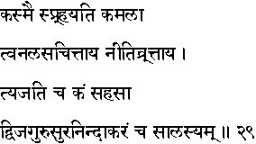
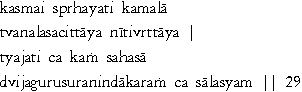

|

|
Verse 29 - Meaning:
Q: To whom is the Goddess of prosperity attracted ? (kasmai sprhayati kamalaa)
A: To that one who is ever industrious (tvanalasa-cittaaya) and just. (niiti-vrttaaya)
Q: Whom (kam) does she desert promptly ? (tyajati-sahasaa)
A: That one who is lazy (saalasyam) and shows no regard for Devas, (sura,) Elders (guru,) and Holy men. (dvija - nindaakaram)
|